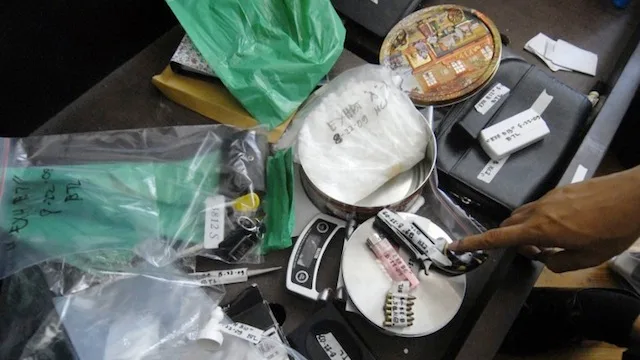
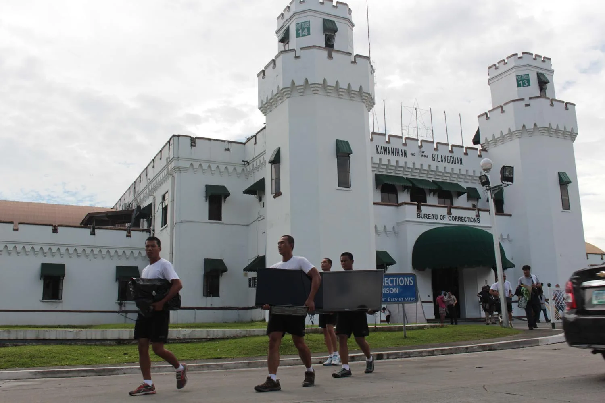
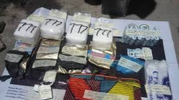
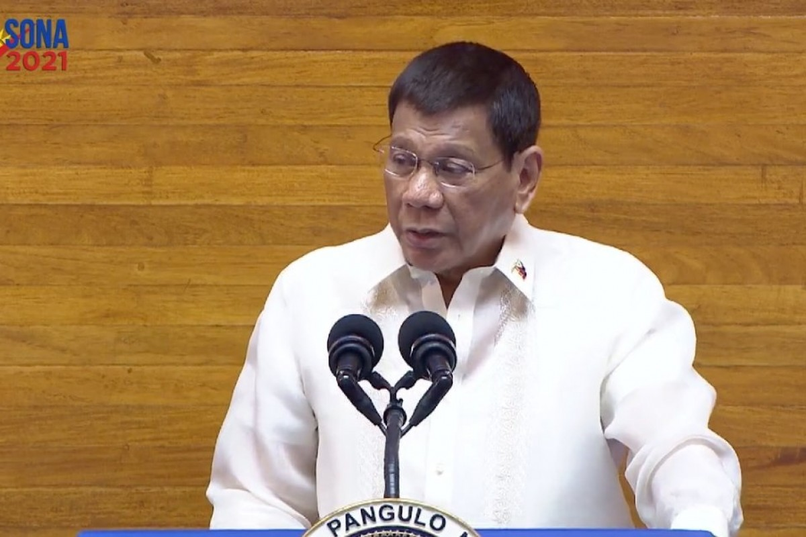

HOME
LEARN
TOPICS
ABOUT US
Related Reports

Before Duterte: How did anti-illegal drug operations fare?

New Bilibid Prison Drug Trafficking Scandal
Mary Jane Veloso drug smuggling case
Duterte's relentless war on drugs, corruption, crime

Seizure of Illegal Drugs

Duterte's relentless drug war yields close to P60B seized